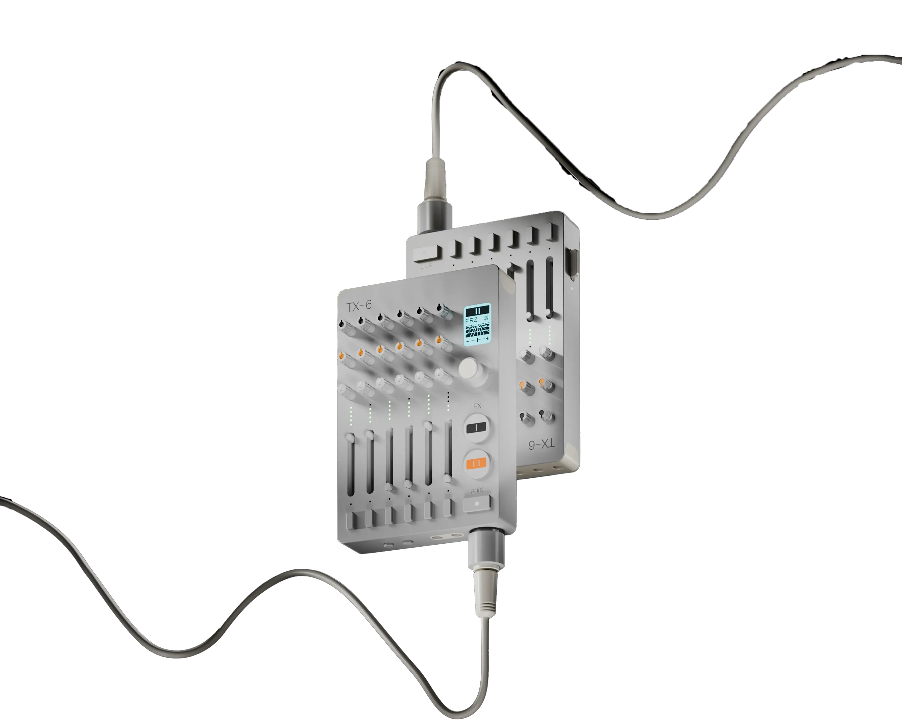
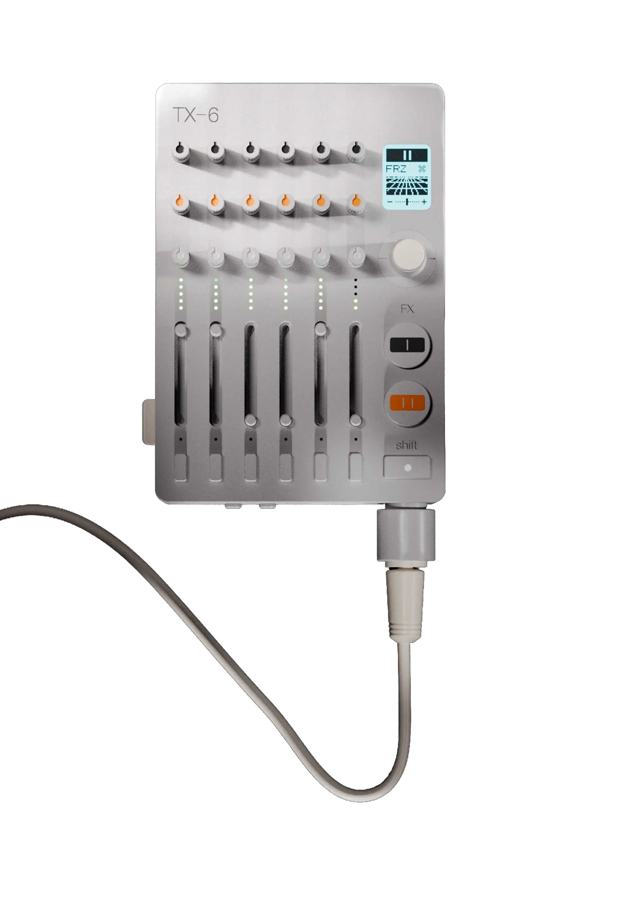
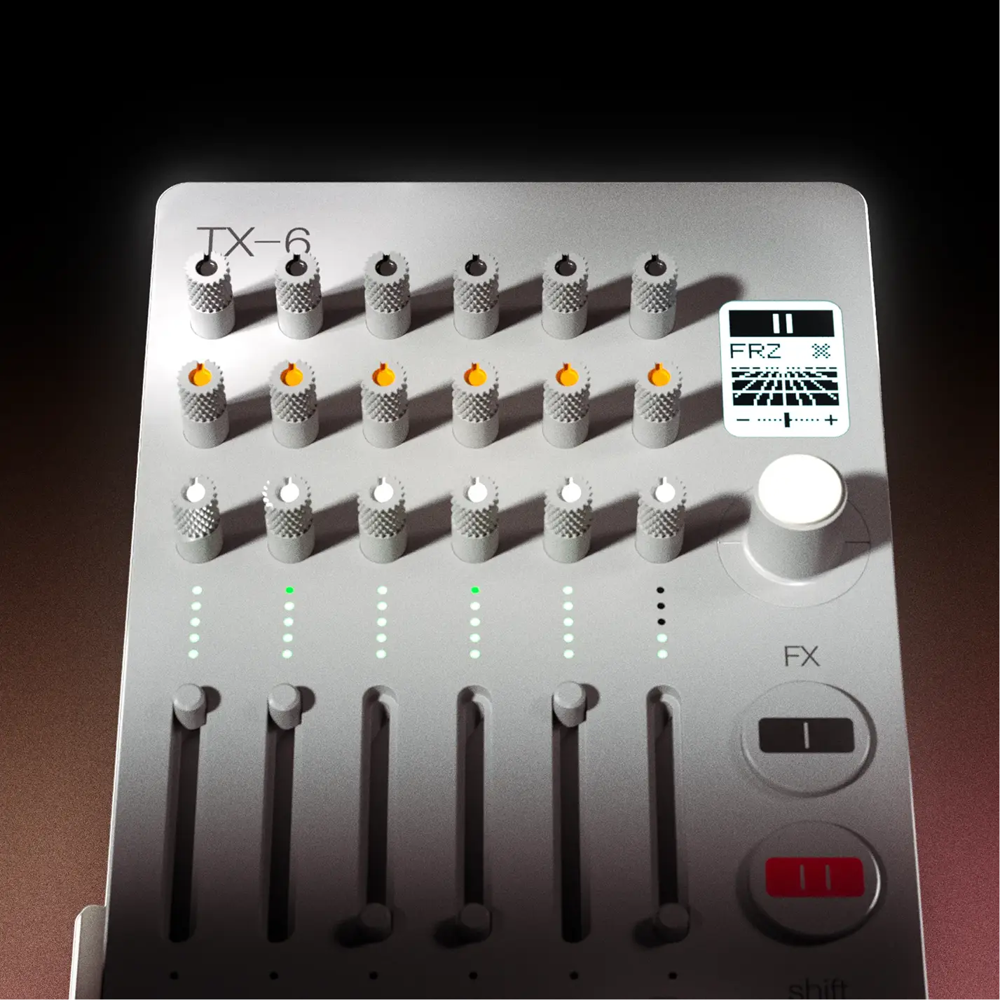
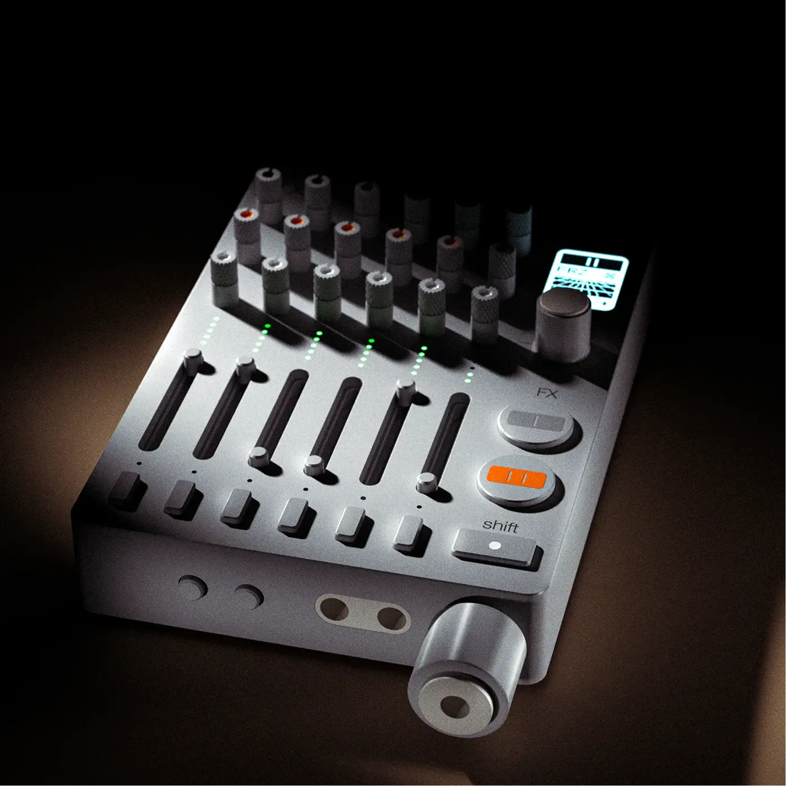

Tx-6

and audio interface
configurable knob layout.
TX-6
Modeled the TX-6 in Rhino with precise surface detailing and geometry control, and developed animations in Blender, to get the teenage engineering design aesthetics

TX–6 is our ultra-portable, battery-powered mixer and multi-channel audio interface. comparable to larger units, but with even more tech packed into one sturdy little machine. mix 6 stereo input channels, use tempo sync, discover the internal synthesizer and sequencer or use the built-in tuner. MFi compatibility even lets you connect to your iOS devices.
What it does
- 01
Mix
Six stereo input channels with a configurable knob layout.
- 02
Sync
Tempo sync keeps connected gear locked to one clock.
- 03
Play
An internal synthesizer and sequencer, built into the mixer.
- 04
Tune
A built-in tuner for checking instruments without extra gear.
- 05
Connect
MFi compatibility lets it work as an audio interface for iOS devices.
- 06
Carry
Battery powered and sturdy enough to travel with.
Animation
How I made it
Study
Looked at how teenage engineering handles proportion, panel layout and small details.
Model in Rhino
Built the body, knobs and faders as precise surfaces, checking each fillet and gap.
Light in Blender
Moved the model into Blender for materials, lighting and the final renders.
Animate
Keyed the camera and parts to produce the video and the scroll-driven sequence above.
Render

